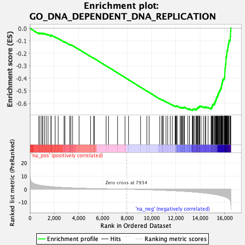

| | | Dataset | DE_genes2 |
| Phenotype | NoPhenotypeAvailable |
| Upregulated in class | na_neg |
| GeneSet | GO_DNA_DEPENDENT_DNA_REPLICATION |
| Enrichment Score (ES) | -0.6582378 |
| Normalized Enrichment Score (NES) | -2.15396 |
| Nominal p-value | 0.0 |
| FDR q-value | 0.0 |
| FWER p-Value | 0.0 |
Table: GSEA Results Summary

Fig 1: Enrichment plot: GO_DNA_DEPENDENT_DNA_REPLICATION
Profile of the Running ES Score & Positions of GeneSet Members on the Rank Ordered List
| PROBE | GENE SYMBOL | GENE_TITLE | RANK IN GENE LIST | RANK METRIC SCORE | RUNNING ES | CORE ENRICHMENT | | 1 | CHTF8 | | | 727 | 3.153 | -0.0375 | No |
| 2 | ATG7 | | | 830 | 2.990 | -0.0372 | No |
| 3 | SMARCAL1 | | | 986 | 2.753 | -0.0407 | No |
| 4 | CDK9 | | | 1055 | 2.659 | -0.0391 | No |
| 5 | PNKP | | | 1192 | 2.475 | -0.0420 | No |
| 6 | POLD4 | | | 1340 | 2.323 | -0.0459 | No |
| 7 | POLG | | | 1491 | 2.182 | -0.0503 | No |
| 8 | RECQL5 | | | 1740 | 1.959 | -0.0612 | No |
| 9 | CDK2AP1 | | | 1742 | 1.957 | -0.0570 | No |
| 10 | WIZ | | | 1748 | 1.952 | -0.0531 | No |
| 11 | ZNF365 | | | 2075 | 1.700 | -0.0693 | No |
| 12 | SAMHD1 | | | 2326 | 1.545 | -0.0812 | No |
| 13 | UPF1 | | | 2807 | 1.281 | -0.1077 | No |
| 14 | EXD2 | | | 2881 | 1.252 | -0.1094 | No |
| 15 | CDC34 | | | 3263 | 1.088 | -0.1303 | No |
| 16 | DDX11 | | | 3360 | 1.054 | -0.1339 | No |
| 17 | RTEL1 | | | 3364 | 1.052 | -0.1318 | No |
| 18 | POLB | | | 3506 | 1.003 | -0.1382 | No |
| 19 | GMNC | | | 4043 | 0.825 | -0.1691 | No |
| 20 | LRWD1 | | | 4983 | 0.574 | -0.2251 | No |
| 21 | EME2 | | | 5252 | 0.504 | -0.2404 | No |
| 22 | BCL6 | | | 5290 | 0.494 | -0.2416 | No |
| 23 | WDR18 | | | 6263 | 0.292 | -0.3002 | No |
| 24 | SETMAR | | | 6461 | 0.252 | -0.3117 | No |
| 25 | WRNIP1 | | | 7205 | 0.115 | -0.3568 | No |
| 26 | DACH1 | | | 7818 | 0.014 | -0.3941 | No |
| 27 | RPA2 | | | 8108 | -0.028 | -0.4116 | No |
| 28 | ZPR1 | | | 9097 | -0.214 | -0.4714 | No |
| 29 | POLA2 | | | 9615 | -0.343 | -0.5022 | No |
| 30 | GINS3 | | | 9801 | -0.401 | -0.5126 | No |
| 31 | LIG3 | | | 10672 | -0.684 | -0.5642 | No |
| 32 | POLE4 | | | 10843 | -0.740 | -0.5730 | No |
| 33 | CDK2 | | | 10886 | -0.760 | -0.5739 | No |
| 34 | TERF2 | | | 10975 | -0.790 | -0.5775 | No |
| 35 | ZMPSTE24 | | | 11187 | -0.876 | -0.5885 | No |
| 36 | POLE3 | | | 11326 | -0.937 | -0.5949 | No |
| 37 | SLFN11 | | | 11532 | -1.020 | -0.6052 | No |
| 38 | SENP2 | | | 11704 | -1.087 | -0.6132 | No |
| 39 | MCMDC2 | | | 11931 | -1.189 | -0.6245 | No |
| 40 | TONSL | | | 11980 | -1.209 | -0.6248 | No |
| 41 | STOML2 | | | 12008 | -1.225 | -0.6237 | No |
| 42 | POLD2 | | | 12038 | -1.238 | -0.6228 | No |
| 43 | LIG1 | | | 12096 | -1.272 | -0.6235 | No |
| 44 | HMGA1 | | | 12102 | -1.273 | -0.6211 | No |
| 45 | RPA3 | | | 12343 | -1.397 | -0.6327 | No |
| 46 | HELB | | | 12425 | -1.437 | -0.6345 | No |
| 47 | SSBP1 | | | 12461 | -1.455 | -0.6335 | No |
| 48 | RFWD3 | | | 12547 | -1.504 | -0.6354 | No |
| 49 | RFC2 | | | 12578 | -1.523 | -0.6339 | No |
| 50 | PRIM2 | | | 12678 | -1.578 | -0.6366 | No |
| 51 | E2F8 | | | 12689 | -1.584 | -0.6337 | No |
| 52 | CCNE1 | | | 12690 | -1.585 | -0.6303 | No |
| 53 | POLD3 | | | 12975 | -1.753 | -0.6438 | No |
| 54 | RPA1 | | | 13109 | -1.830 | -0.6479 | No |
| 55 | POLD1 | | | 13115 | -1.833 | -0.6443 | No |
| 56 | DNAJA3 | | | 13345 | -1.985 | -0.6539 | Yes |
| 57 | CHTF18 | | | 13370 | -2.009 | -0.6510 | Yes |
| 58 | CDT1 | | | 13400 | -2.026 | -0.6484 | Yes |
| 59 | RPAIN | | | 13443 | -2.059 | -0.6465 | Yes |
| 60 | TIMELESS | | | 13518 | -2.107 | -0.6464 | Yes |
| 61 | ALYREF | | | 13653 | -2.199 | -0.6498 | Yes |
| 62 | DBF4B | | | 13663 | -2.209 | -0.6456 | Yes |
| 63 | POLN | | | 13727 | -2.262 | -0.6445 | Yes |
| 64 | MCMBP | | | 13751 | -2.284 | -0.6410 | Yes |
| 65 | E2F7 | | | 13768 | -2.300 | -0.6370 | Yes |
| 66 | MCM3 | | | 13783 | -2.315 | -0.6328 | Yes |
| 67 | MCM5 | | | 13861 | -2.378 | -0.6323 | Yes |
| 68 | FEN1 | | | 13911 | -2.426 | -0.6300 | Yes |
| 69 | MCM7 | | | 13952 | -2.457 | -0.6272 | Yes |
| 70 | RFC5 | | | 13956 | -2.460 | -0.6220 | Yes |
| 71 | RECQL4 | | | 14062 | -2.561 | -0.6228 | Yes |
| 72 | FGFR1 | | | 14259 | -2.748 | -0.6288 | Yes |
| 73 | ORC5 | | | 14402 | -2.879 | -0.6313 | Yes |
| 74 | POLE | | | 14456 | -2.944 | -0.6281 | Yes |
| 75 | MGME1 | | | 14648 | -3.182 | -0.6328 | Yes |
| 76 | PCNA | | | 14896 | -3.501 | -0.6403 | Yes |
| 77 | MCM4 | | | 14906 | -3.510 | -0.6332 | Yes |
| 78 | ORC3 | | | 14965 | -3.594 | -0.6290 | Yes |
| 79 | RRM2B | | | 15001 | -3.653 | -0.6232 | Yes |
| 80 | MCM2 | | | 15006 | -3.658 | -0.6155 | Yes |
| 81 | GMNN | | | 15032 | -3.688 | -0.6090 | Yes |
| 82 | DONSON | | | 15105 | -3.791 | -0.6052 | Yes |
| 83 | ETAA1 | | | 15187 | -3.901 | -0.6017 | Yes |
| 84 | ZNF830 | | | 15192 | -3.908 | -0.5934 | Yes |
| 85 | POLA1 | | | 15213 | -3.936 | -0.5861 | Yes |
| 86 | MSH3 | | | 15265 | -4.049 | -0.5804 | Yes |
| 87 | RAD51 | | | 15283 | -4.088 | -0.5726 | Yes |
| 88 | CHEK2 | | | 15311 | -4.128 | -0.5653 | Yes |
| 89 | ORC4 | | | 15318 | -4.149 | -0.5566 | Yes |
| 90 | BOD1L1 | | | 15365 | -4.231 | -0.5503 | Yes |
| 91 | POLE2 | | | 15406 | -4.310 | -0.5433 | Yes |
| 92 | DNA2 | | | 15436 | -4.365 | -0.5356 | Yes |
| 93 | GEN1 | | | 15480 | -4.447 | -0.5286 | Yes |
| 94 | INO80 | | | 15484 | -4.450 | -0.5191 | Yes |
| 95 | NUCKS1 | | | 15540 | -4.573 | -0.5126 | Yes |
| 96 | GINS1 | | | 15564 | -4.619 | -0.5039 | Yes |
| 97 | ATRX | | | 15599 | -4.719 | -0.4958 | Yes |
| 98 | EME1 | | | 15663 | -4.840 | -0.4891 | Yes |
| 99 | GINS4 | | | 15688 | -4.879 | -0.4800 | Yes |
| 100 | BLM | | | 15728 | -4.957 | -0.4716 | Yes |
| 101 | BAZ1A | | | 15747 | -5.005 | -0.4618 | Yes |
| 102 | POLG2 | | | 15760 | -5.033 | -0.4517 | Yes |
| 103 | ORC1 | | | 15778 | -5.075 | -0.4417 | Yes |
| 104 | RFC4 | | | 15807 | -5.149 | -0.4322 | Yes |
| 105 | MCM6 | | | 15829 | -5.218 | -0.4222 | Yes |
| 106 | PRIM1 | | | 15856 | -5.276 | -0.4123 | Yes |
| 107 | ORC6 | | | 15923 | -5.453 | -0.4045 | Yes |
| 108 | FANCM | | | 15986 | -5.624 | -0.3961 | Yes |
| 109 | DBF4 | | | 16002 | -5.664 | -0.3847 | Yes |
| 110 | RFC3 | | | 16020 | -5.728 | -0.3733 | Yes |
| 111 | NBN | | | 16021 | -5.731 | -0.3609 | Yes |
| 112 | TERF1 | | | 16025 | -5.742 | -0.3486 | Yes |
| 113 | RFC1 | | | 16030 | -5.761 | -0.3363 | Yes |
| 114 | TICRR | | | 16041 | -5.802 | -0.3243 | Yes |
| 115 | ORC2 | | | 16058 | -5.843 | -0.3126 | Yes |
| 116 | WRN | | | 16074 | -5.884 | -0.3008 | Yes |
| 117 | PURA | | | 16076 | -5.891 | -0.2881 | Yes |
| 118 | THOC1 | | | 16107 | -5.970 | -0.2769 | Yes |
| 119 | CCNE2 | | | 16115 | -5.986 | -0.2644 | Yes |
| 120 | RECQL | | | 16118 | -5.999 | -0.2515 | Yes |
| 121 | CDC7 | | | 16121 | -6.016 | -0.2385 | Yes |
| 122 | TIPIN | | | 16138 | -6.072 | -0.2263 | Yes |
| 123 | FBXO5 | | | 16169 | -6.210 | -0.2147 | Yes |
| 124 | MMS22L | | | 16185 | -6.275 | -0.2020 | Yes |
| 125 | PRIMPOL | | | 16194 | -6.304 | -0.1888 | Yes |
| 126 | GINS2 | | | 16213 | -6.392 | -0.1760 | Yes |
| 127 | ZRANB3 | | | 16266 | -6.660 | -0.1647 | Yes |
| 128 | CDC45 | | | 16272 | -6.693 | -0.1505 | Yes |
| 129 | REV3L | | | 16297 | -6.852 | -0.1371 | Yes |
| 130 | ATAD5 | | | 16312 | -6.915 | -0.1230 | Yes |
| 131 | DSCC1 | | | 16359 | -7.253 | -0.1100 | Yes |
| 132 | CDC6 | | | 16375 | -7.439 | -0.0948 | Yes |
| 133 | WDHD1 | | | 16469 | -8.658 | -0.0817 | Yes |
| 134 | MCM10 | | | 16471 | -8.676 | -0.0629 | Yes |
| 135 | POLQ | | | 16490 | -9.648 | -0.0431 | Yes |
| 136 | BRCA2 | | | 16493 | -9.707 | -0.0221 | Yes |
| 137 | MCM9 | | | 16513 | -11.241 | 0.0011 | Yes |
Table: GSEA details [plain text format]
Fig 2: GO_DNA_DEPENDENT_DNA_REPLICATION: Random ES distribution
Gene set null distribution of ES for GO_DNA_DEPENDENT_DNA_REPLICATION